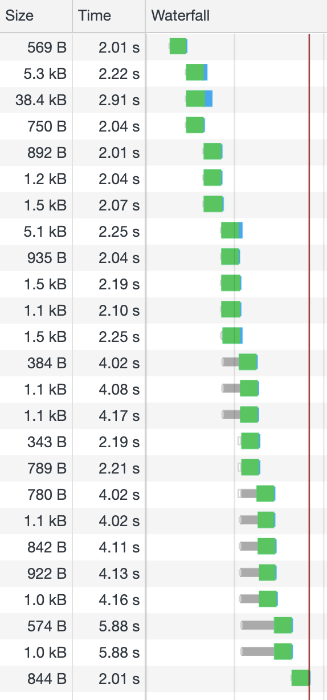
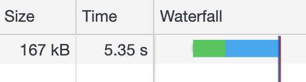

Own your
Build Step
—own your code
Lukas Taegert-Atkinson

Why don't we run JavaScript like a scripting language any more?
Exhibit A
web application (slow network)
loaded: 18.29s

bundle code
(no minification)
loaded: 7.48s

- No loading waterfall
- Less code via
tree-shaking
Exhibit B
node server
Bundling eliminates the
load/parse waterfall.
Also for cloud functions,
command line tools,
…
Choose your tool
Webpack, Parcel, esbuild
Good options, but strong browser focus
 Rollup
Rollup
No assumptions about target environment:
- customize via plugins
- six output formats
No-overhead ES module bundling:
- ideal for libraries/intermediate files
Superior no-setup dead-code-elimination
Using rollup
Command line
npx rollup main.js -o bundle.js -f cjs -p node-resolve -p commonjs -p
json
Configuration file
import nodeResolve from '@rollup/plugin-node-resolve';
import commonjs from '@rollup/plugin-commonjs';
import json from '@rollup/plugin-json';
export default {
input: 'main.js',
plugins: [nodeResolve(), commonjs(), json()],
output: {
format: 'cjs'
}
}
We own the build step, now let's
Own the code
—write our own plugins!
1. Inject information
2. Patch up files
Module life-cycle
Image showing how it works